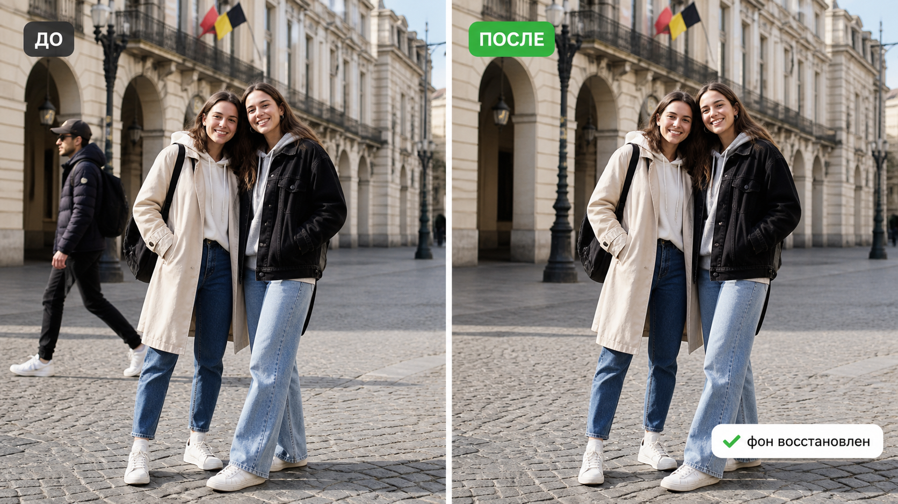

Промтзилла
Такой промт помогает убрать случайного прохожего, человека на заднем плане или лишнюю фигуру в кадре, не меняя остальных участников фотографии.

Пошаговая инструкция
- 1Выбери фото, где понятно, какого человека нужно удалить, а кого сохранить.
- 2Загрузи изображение в инструмент редактирования фото онлайн.
- 3Если интерфейс позволяет выделить область, аккуратно отметь только лишнего человека.
- 4Вставь промт и попроси восстановить фон, тени и фактуру за удалённым объектом.
- 5Проверь края, руки, лица, тени и повторяющиеся узоры; при необходимости попроси исправить только проблемное место.
Пример результата
На обложке показан типичный сценарий: слева исходное фото, справа результат, который можно получить через инструмент редактирования фото онлайн.
Промт
RU
Удали с фотографии лишнего человека: [опиши кого именно удалить]. Важно: — измени только указанного человека; — сохрани всех остальных людей без изменений; — не меняй лица, одежду, позы и пропорции главных людей; — восстанови фон за удалённым человеком естественно; — сохрани перспективу, свет, тени, отражения, текстуры пола, стен и предметов; — не добавляй новых людей и объектов; — не размывай участок удаления, результат должен выглядеть как обычная фотография. Если область сложная, сначала сделай максимально естественную версию, а затем отдельно укажи, какие места требуют ручной проверки.
EN
Remove the unwanted person from the photo: [describe exactly whom to remove]. Important: — change only the specified person; — keep all other people unchanged; — do not alter faces, clothing, poses, or body proportions of the main people; — naturally reconstruct the background behind the removed person; — preserve perspective, lighting, shadows, reflections, floor/wall/object textures; — do not add new people or objects; — do not blur the removal area; the result should look like a normal photograph. If the area is complex, create the most natural version first, then list which parts may need manual checking.
Важно
Не используй удаление людей для обмана, травли или подделки значимых событий. Для личных фото лучше сохранять оригинал и работать с копией.
Теги